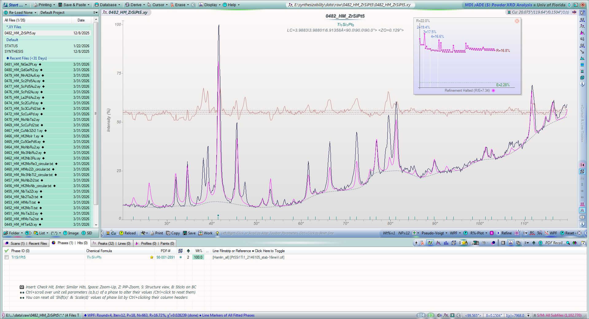
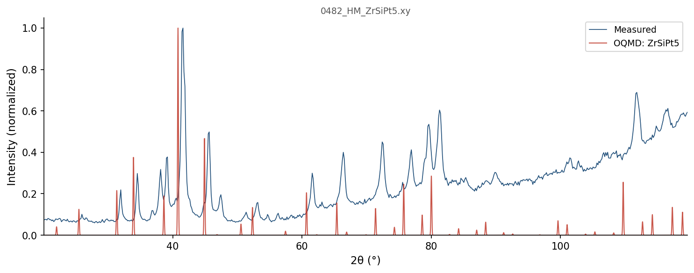

| Element | Expected (mol frac) | Measured (mol frac) | Δ (mol frac) | Δ (%) |
|---|---|---|---|---|
| Pt | 0.7143 | 0.7143 | -0.0000 | -0.00% |
| Si | 0.1429 | 0.1427 | -0.0002 | -0.02% |
| Zr | 0.1429 | 0.1431 | +0.0002 | +0.02% |
390 OQMD entries in the Pt-Si-Zr element system (16 on hull, 88 ICSD-tagged). OQMD: negative = below hull (stable). Sorted most stable first.
| Composition | Stability (meV/atom) | ΔE (meV/atom) | ICSD | Space | Entry | CIF |
|---|---|---|---|---|---|---|
Pt3Zr1 |
-193 | -1028.4 | ✓ | Pt-Zr | 2017725 | CIF |
Pt1Si1Zr1 |
-142 | -1163.9 | Pt-Si-Zr | 1518133 | CIF | |
Pt1Zr1 |
-138 | -1086.0 | ✓ | Pt-Zr | 30995 | CIF |
Pt2Si1 |
-111 | -722.6 | ✓ | Pt-Si | 14060 | CIF |
Si1Zr1 |
-93 | -935.1 | ✓ | Si-Zr | 31074 | CIF |
Pt5Si1Zr1 |
-42 | -939.1 | Pt-Si-Zr | 2146113 | CIF | |
Pt8Zr1 |
-39 | -496.1 | Pt-Zr | 1374867 | CIF | |
Si1Zr2 |
-36 | -780.8 | ✓ | Si-Zr | 7792 | CIF |
Pt1Si1 |
-33 | -671.0 | Pt-Si | 1907910 | CIF | |
Si2Zr3 |
-30 | -885.0 | Si-Zr | 1364772 | CIF | |
Si2Zr1 |
-30 | -653.3 | ✓ | Si-Zr | 3570 | CIF |
Pt1Zr2 |
-13 | -761.5 | Pt-Zr | 1373540 | CIF | |
Pt1Zr3 |
-9 | -580.0 | Pt-Zr | 1800426 | CIF | |
Pt1 |
+0 | 0.0 | ✓ | Pt | 7522 | CIF |
Si1 |
+0 | 0.0 | ✓ | Si | 5714 | CIF |
Zr1 |
+0 | -0.2 | Zr | 1791927 | CIF | |
Si1 |
+0 | 0.0 | Si | 1215550 | CIF | |
Si2Zr1 |
+0 | -653.3 | ✓ | Si-Zr | 39988 | CIF |
Si1 |
+0 | 0.0 | ✓ | Si | 12378 | CIF |
Pt1Si1Zr1 |
+0 | -1163.8 | Pt-Si-Zr | 1436653 | CIF | |
Pt1Si1Zr1 |
+0 | -1163.8 | ✓ | Pt-Si-Zr | 23750 | CIF |
Pt1Si1Zr1 |
+0 | -1163.8 | Pt-Si-Zr | 1272398 | CIF | |
Si1 |
+0 | 0.1 | Si | 1880654 | CIF | |
Zr1 |
+0 | 0.0 | ✓ | Zr | 67408 | CIF |
Si1Zr2 |
+0 | -780.6 | Si-Zr | 1925332 | CIF | |
Pt6Si5 |
+0 | -684.9 | ✓ | Pt-Si | 8038 | CIF |
Zr1 |
+0 | 0.1 | Zr | 758445 | CIF | |
Zr1 |
+0 | 0.1 | Zr | 758455 | CIF | |
Pt1 |
+0 | 0.3 | Pt | 1214560 | CIF | |
Zr1 |
+0 | 0.2 | ✓ | Zr | 8196 | CIF |
Zr1 |
+0 | 0.2 | Zr | 1215390 | CIF | |
Zr1 |
+0 | 0.2 | Zr | 758475 | CIF | |
Pt1Si1 |
+0 | -670.7 | ✓ | Pt-Si | 2257 | CIF |
Zr1 |
+0 | 0.2 | Zr | 758462 | CIF | |
Zr1 |
+0 | 0.2 | Zr | 758464 | CIF | |
Zr1 |
+0 | 0.3 | Zr | 758463 | CIF | |
Zr1 |
+0 | 0.3 | Zr | 758466 | CIF | |
Zr1 |
+0 | 0.3 | Zr | 758474 | CIF | |
Zr1 |
+0 | 0.3 | Zr | 758457 | CIF | |
Zr1 |
+1 | 0.3 | ✓ | Zr | 117515 | CIF |
Zr1 |
+1 | 0.3 | ✓ | Zr | 2030147 | CIF |
Zr1 |
+1 | 0.4 | Zr | 758448 | CIF | |
Zr1 |
+1 | 0.4 | Zr | 758450 | CIF | |
Zr1 |
+1 | 0.4 | Zr | 758465 | CIF | |
Zr1 |
+1 | 0.4 | Zr | 758449 | CIF | |
Zr1 |
+1 | 0.4 | Zr | 758470 | CIF | |
Zr1 |
+1 | 0.4 | Zr | 758456 | CIF | |
Zr1 |
+1 | 0.4 | Zr | 758453 | CIF | |
Zr1 |
+1 | 0.5 | Zr | 758472 | CIF | |
Zr1 |
+1 | 0.5 | Zr | 758461 | CIF | |
Zr1 |
+1 | 0.5 | Zr | 758471 | CIF | |
Zr1 |
+1 | 0.5 | Zr | 758458 | CIF | |
Zr1 |
+1 | 0.5 | Zr | 758451 | CIF | |
Zr1 |
+1 | 0.5 | Zr | 758454 | CIF | |
Zr1 |
+1 | 0.5 | Zr | 758460 | CIF | |
Zr1 |
+1 | 0.5 | Zr | 758473 | CIF | |
Zr1 |
+1 | 0.5 | Zr | 758452 | CIF | |
Zr1 |
+1 | 0.5 | Zr | 758446 | CIF | |
Zr1 |
+1 | 0.5 | Zr | 758444 | CIF | |
Zr1 |
+1 | 0.6 | Zr | 758459 | CIF | |
Zr1 |
+1 | 0.6 | Zr | 758447 | CIF | |
Zr1 |
+1 | 0.6 | Zr | 1926822 | CIF | |
Pt2Si3 |
+1 | -535.9 | Pt-Si | 1792912 | CIF | |
Si1Zr1 |
+1 | -934.1 | ✓ | Si-Zr | 3569 | CIF |
Zr1 |
+1 | 1.0 | ✓ | Zr | 2031515 | CIF |
Zr1 |
+1 | 1.3 | Zr | 1801137 | CIF | |
Pt2Si1Zr1 |
+3 | -1062.9 | Pt-Si-Zr | 1365093 | CIF | |
Pt1 |
+3 | 2.7 | Pt | 1215718 | CIF | |
Si4Zr5 |
+3 | -904.5 | ✓ | Si-Zr | 3883 | CIF |
Zr1 |
+3 | 2.9 | Zr | 1215301 | CIF | |
Si1Zr1 |
+4 | -931.3 | Si-Zr | 1339808 | CIF | |
Pt1 |
+4 | 4.0 | Pt | 1856759 | CIF | |
Pt2Si1 |
+6 | -716.7 | Pt-Si | 1520632 | CIF | |
Pt3Zr1 |
+8 | -1020.0 | Pt-Zr | 348522 | CIF | |
Pt3Zr1 |
+10 | -1018.8 | Pt-Zr | 1980683 | CIF | |
Pt3Zr1 |
+11 | -1017.3 | ✓ | Pt-Zr | 18039 | CIF |
Si1 |
+11 | 11.2 | ✓ | Si | 5764 | CIF |
Si1 |
+11 | 11.4 | ✓ | Si | 22507 | CIF |
Pt2Si1 |
+12 | -710.3 | Pt-Si | 1415984 | CIF | |
Pt1 |
+13 | 13.0 | ✓ | Pt | 2030154 | CIF |
Pt2Si3 |
+14 | -523.0 | ✓ | Pt-Si | 14061 | CIF |
Pt1Si2 |
+14 | -432.9 | Pt-Si | 1415985 | CIF | |
Pt1Zr3 |
+16 | -563.6 | Pt-Zr | 1280320 | CIF | |
Pt3Zr1 |
+16 | -1012.0 | Pt-Zr | 324036 | CIF | |
Si1Zr3 |
+16 | -569.2 | ✓ | Si-Zr | 2053245 | CIF |
Pt5Zr3 |
+18 | -1039.6 | Pt-Zr | 1927865 | CIF | |
Zr1 |
+20 | 19.5 | Zr | 758468 | CIF | |
Si1Zr1 |
+21 | -914.2 | Si-Zr | 757881 | CIF | |
Pt3Si1 |
+23 | -518.6 | ✓ | Pt-Si | 23249 | CIF |
Pt3Zr5 |
+26 | -816.9 | ✓ | Pt-Zr | 30996 | CIF |
Pt3Zr5 |
+26 | -816.7 | Pt-Zr | 1338686 | CIF | |
Zr1 |
+26 | 26.2 | Zr | 1216106 | CIF | |
Si3Zr5 |
+27 | -819.2 | ✓ | Si-Zr | 31218 | CIF |
Pt3Si1 |
+29 | -513.1 | ✓ | Pt-Si | 14062 | CIF |
Si1 |
+30 | 30.4 | ✓ | Si | 2032708 | CIF |
Pt1 |
+32 | 31.6 | Pt | 1215451 | CIF | |
Pt5Zr3 |
+35 | -1022.2 | Pt-Zr | 1800017 | CIF | |
Pt1Si64 |
+36 | 15.4 | ✓ | Pt-Si | 2065319 | CIF |
Si1 |
+39 | 39.4 | ✓ | Si | 2032709 | CIF |
Pt1Si64 |
+39 | 18.8 | ✓ | Pt-Si | 2065321 | CIF |
Zr1 |
+40 | 39.7 | ✓ | Zr | 7509 | CIF |
Zr1 |
+40 | 39.7 | Zr | 1214589 | CIF | |
Pt1Zr2 |
+41 | -720.8 | Pt-Zr | 757623 | CIF | |
Pt1Zr2 |
+41 | -720.5 | Pt-Zr | 1800593 | CIF | |
Pt1 |
+43 | 42.5 | Pt | 1216077 | CIF | |
Zr1 |
+43 | 42.4 | Zr | 1215747 | CIF | |
Pt5Zr3 |
+45 | -1011.7 | Pt-Zr | 1799721 | CIF | |
Pt1Zr1 |
+46 | -1040.5 | Pt-Zr | 757625 | CIF | |
Pt1 |
+48 | 48.2 | Pt | 1214649 | CIF | |
Zr1 |
+48 | 48.2 | Zr | 1215480 | CIF | |
Si1 |
+49 | 48.6 | ✓ | Si | 2031443 | CIF |
Pt12Si5 |
+49 | -588.5 | ✓ | Pt-Si | 37538 | CIF |
Si1 |
+52 | 52.3 | Si | 717362 | CIF | |
Pt1Zr2 |
+53 | -708.5 | ✓ | Pt-Zr | 2053135 | CIF |
Pt3Si1 |
+53 | -489.0 | Pt-Si | 1796211 | CIF | |
Si1 |
+55 | 55.3 | ✓ | Si | 2059274 | CIF |
Si1Zr2 |
+56 | -725.2 | Si-Zr | 1521460 | CIF | |
Zr1 |
+56 | 56.0 | Zr | 1215836 | CIF | |
Zr1 |
+56 | 56.0 | Zr | 1214678 | CIF | |
Pt1 |
+57 | 57.0 | ✓ | Pt | 2032578 | CIF |
Pt3Si2 |
+57 | -645.0 | Pt-Si | 1800364 | CIF | |
Pt1 |
+60 | 59.9 | Pt | 1215361 | CIF | |
Si64Zr1 |
+61 | 30.7 | ✓ | Si-Zr | 2065317 | CIF |
Pt3Si2Zr2 |
+61 | -1046.6 | Pt-Si-Zr | 1799923 | CIF | |
Pt1Si1Zr1 |
+61 | -1102.6 | Pt-Si-Zr | 1439418 | CIF | |
Si1 |
+62 | 62.1 | ✓ | Si | 2032707 | CIF |
Si1 |
+63 | 62.7 | ✓ | Si | 2046276 | CIF |
Si1 |
+63 | 62.7 | Si | 717360 | CIF | |
Pt3Zr1 |
+63 | -965.0 | Pt-Zr | 1782397 | CIF | |
Si1 |
+67 | 67.4 | ✓ | Si | 2032710 | CIF |
Si1 |
+69 | 69.1 | ✓ | Si | 2031149 | CIF |
Si1 |
+69 | 69.2 | ✓ | Si | 22408 | CIF |
Pt1 |
+73 | 72.6 | Pt | 1215272 | CIF | |
Pt11Zr9 |
+73 | -1001.1 | ✓ | Pt-Zr | 18040 | CIF |
Pt12Si5 |
+74 | -564.1 | ✓ | Pt-Si | 14063 | CIF |
Pt5Si2 |
+75 | -544.5 | Pt-Si | 1791182 | CIF | |
Pt1Si1Zr2 |
+80 | -942.0 | Pt-Si-Zr | 1560733 | CIF | |
Si1 |
+80 | 79.7 | ✓ | Si | 2046573 | CIF |
Zr1 |
+80 | 79.6 | ✓ | Zr | 9320 | CIF |
Zr1 |
+80 | 79.9 | Zr | 1215212 | CIF | |
Si1 |
+80 | 80.1 | ✓ | Si | 2031150 | CIF |
Zr1 |
+81 | 80.3 | Zr | 1215925 | CIF | |
Si1 |
+81 | 81.2 | ✓ | Si | 2029575 | CIF |
Pt1Zr3 |
+83 | -497.4 | Pt-Zr | 757634 | CIF | |
Pt4Zr1 |
+83 | -753.5 | Pt-Zr | 1784830 | CIF | |
Pt3Zr1 |
+85 | -943.2 | Pt-Zr | 298253 | CIF | |
Pt4Si5 |
+88 | -508.7 | Pt-Si | 1800377 | CIF | |
Si1 |
+89 | 89.0 | ✓ | Si | 2029571 | CIF |
Si1 |
+90 | 90.3 | ✓ | Si | 2021436 | CIF |
Zr1 |
+91 | 90.8 | Zr | 1214945 | CIF | |
Pt1 |
+95 | 94.8 | ✓ | Pt | 2032577 | CIF |
Si1 |
+96 | 96.3 | ✓ | Si | 2046575 | CIF |
Pt1 |
+96 | 96.3 | Pt | 1215183 | CIF | |
Pt2Si1 |
+100 | -622.8 | ✓ | Pt-Si | 30972 | CIF |
Si1 |
+101 | 101.0 | ✓ | Si | 22407 | CIF |
Pt1Zr3 |
+105 | -474.8 | Pt-Zr | 2082332 | CIF | |
Si1 |
+110 | 110.2 | ✓ | Si | 2046572 | CIF |
Si1 |
+113 | 113.1 | ✓ | Si | 2032923 | CIF |
Pt1 |
+114 | 114.4 | Pt | 2066489 | CIF | |
Pt1Zr2 |
+117 | -644.9 | Pt-Zr | 757640 | CIF | |
Pt1Si1Zr1 |
+119 | -1044.7 | Pt-Si-Zr | 1436806 | CIF | |
Pt1Zr1 |
+120 | -966.1 | Pt-Zr | 757639 | CIF | |
Pt1Zr3 |
+127 | -452.6 | Pt-Zr | 2124181 | CIF | |
Si1 |
+129 | 128.7 | ✓ | Si | 2059273 | CIF |
Si2Zr1 |
+130 | -522.8 | ✓ | Si-Zr | 2031089 | CIF |
Si1 |
+131 | 131.3 | ✓ | Si | 2029573 | CIF |
Pt1Zr3 |
+131 | -448.6 | Pt-Zr | 2086034 | CIF | |
Pt1 |
+132 | 131.9 | Pt | 2069388 | CIF | |
Pt1 |
+133 | 133.2 | Pt | 1215094 | CIF | |
Zr1 |
+134 | 133.9 | Zr | 1214856 | CIF | |
Pt1 |
+136 | 135.9 | Pt | 2066507 | CIF | |
Zr1 |
+137 | 136.3 | Zr | 1215034 | CIF | |
Zr1 |
+137 | 136.4 | Zr | 1280431 | CIF | |
Zr1 |
+137 | 136.7 | Zr | 1280432 | CIF | |
Pt1Si5 |
+138 | -85.8 | Pt-Si | 1799485 | CIF | |
Pt2Si2Zr1 |
+140 | -827.1 | Pt-Si-Zr | 1235601 | CIF | |
Pt1Zr3 |
+141 | -439.5 | Pt-Zr | 757643 | CIF | |
Si1 |
+145 | 145.2 | ✓ | Si | 2046574 | CIF |
Pt1 |
+146 | 146.3 | Pt | 1214827 | CIF | |
Pt1 |
+148 | 147.5 | ✓ | Pt | 2031504 | CIF |
Si1 |
+158 | 158.2 | ✓ | Si | 3484 | CIF |
Pt1 |
+159 | 159.2 | Pt | 2069386 | CIF | |
Si1 |
+161 | 160.5 | ✓ | Si | 18985 | CIF |
Pt1Zr3 |
+162 | -418.1 | Pt-Zr | 302952 | CIF | |
Pt1Zr3 |
+165 | -415.4 | Pt-Zr | 343815 | CIF | |
Pt1 |
+165 | 165.5 | Pt | 2066498 | CIF | |
Pt1Zr2 |
+165 | -596.0 | Pt-Zr | 757629 | CIF | |
Pt1Si2Zr1 |
+166 | -707.4 | Pt-Si-Zr | 1645514 | CIF | |
Pt5Zr1 |
+166 | -542.9 | Pt-Zr | 1784245 | CIF | |
Pt1Zr3 |
+173 | -407.2 | Pt-Zr | 757631 | CIF | |
Pt1Zr1 |
+173 | -913.2 | Pt-Zr | 304821 | CIF | |
Pt1 |
+173 | 173.0 | Pt | 1214916 | CIF | |
Si1 |
+173 | 173.1 | ✓ | Si | 2032012 | CIF |
Pt9Si2 |
+173 | -220.8 | Pt-Si | 1338703 | CIF | |
Pt1Zr1 |
+174 | -912.5 | ✓ | Pt-Zr | 18038 | CIF |
Pt1Zr3 |
+176 | -404.3 | Pt-Zr | 319329 | CIF | |
Si1 |
+179 | 178.6 | ✓ | Si | 2059275 | CIF |
Si2Zr1 |
+179 | -474.7 | ✓ | Si-Zr | 2031090 | CIF |
Pt1Si1Zr1 |
+179 | -984.9 | Pt-Si-Zr | 1436730 | CIF | |
Pt1Si1Zr1 |
+179 | -984.9 | Pt-Si-Zr | 1447670 | CIF | |
Pt1Si2 |
+182 | -265.4 | Pt-Si | 1520531 | CIF | |
Pt1Zr3 |
+183 | -397.3 | Pt-Zr | 313494 | CIF | |
Zr1 |
+184 | 184.2 | Zr | 1215123 | CIF | |
Si1Zr2 |
+186 | -595.2 | Si-Zr | 1520617 | CIF | |
Pt1 |
+186 | 185.9 | Pt | 2054436 | CIF | |
Pt1Zr1 |
+187 | -898.9 | Pt-Zr | 1521004 | CIF | |
Pt1Zr1 |
+189 | -897.4 | Pt-Zr | 336363 | CIF | |
Pt1 |
+189 | 188.7 | Pt | 2069384 | CIF | |
Pt1Zr5 |
+192 | -194.5 | Pt-Zr | 757628 | CIF | |
Pt3Si2 |
+197 | -505.2 | Pt-Si | 1964028 | CIF | |
Pt3Zr4 |
+199 | -747.5 | Pt-Zr | 757627 | CIF | |
Pt1Zr1 |
+210 | -876.4 | Pt-Zr | 2083297 | CIF | |
Pt1Zr2 |
+212 | -549.3 | Pt-Zr | 757613 | CIF | |
Si1Zr3 |
+212 | -373.4 | Si-Zr | 757890 | CIF | |
Pt1Si1Zr1 |
+217 | -947.1 | Pt-Si-Zr | 1439203 | CIF | |
Pt3Zr1 |
+218 | -810.8 | Pt-Zr | 2082482 | CIF | |
Si1 |
+222 | 222.4 | ✓ | Si | 2015703 | CIF |
Pt3Si1 |
+223 | -319.5 | Pt-Si | 346825 | CIF | |
Pt1Si4Zr3 |
+223 | -692.5 | Pt-Si-Zr | 1645516 | CIF | |
Si1 |
+224 | 223.8 | ✓ | Si | 2029574 | CIF |
Si1Zr3 |
+229 | -356.2 | Si-Zr | 349707 | CIF | |
Pt1Zr1 |
+231 | -854.9 | Pt-Zr | 2082182 | CIF | |
Si1Zr3 |
+232 | -353.8 | Si-Zr | 757887 | CIF | |
Si1Zr3 |
+232 | -353.8 | Si-Zr | 325221 | CIF | |
Pt1Zr2 |
+233 | -528.4 | Pt-Zr | 757637 | CIF | |
Si1Zr3 |
+234 | -351.4 | Si-Zr | 757899 | CIF | |
Pt3Si4Zr1 |
+236 | -535.6 | Pt-Si-Zr | 1645468 | CIF | |
Si1Zr1 |
+240 | -694.7 | Si-Zr | 757888 | CIF | |
Si1Zr1 |
+240 | -694.7 | Si-Zr | 1106946 | CIF | |
Pt1Zr1 |
+241 | -845.5 | Pt-Zr | 757632 | CIF | |
Si1Zr1 |
+241 | -694.0 | Si-Zr | 757877 | CIF | |
Si1Zr3 |
+244 | -341.5 | Si-Zr | 1280415 | CIF | |
Pt3Zr1 |
+246 | -782.4 | ✓ | Pt-Zr | 2034069 | CIF |
Pt1Si2Zr1 |
+248 | -625.2 | Pt-Si-Zr | 1645515 | CIF | |
Si1Zr5 |
+249 | -141.2 | Si-Zr | 757884 | CIF | |
Pt2Zr1 |
+254 | -793.7 | Pt-Zr | 1594729 | CIF | |
Pt1Zr2 |
+255 | -506.1 | Pt-Zr | 757636 | CIF | |
Pt1 |
+256 | 256.3 | Pt | 1280329 | CIF | |
Pt1 |
+257 | 256.6 | Pt | 1215005 | CIF | |
Pt1Si1 |
+260 | -411.4 | Pt-Si | 1223918 | CIF | |
Pt1Zr1 |
+262 | -823.7 | Pt-Zr | 757633 | CIF | |
Pt1Si1 |
+266 | -405.1 | Pt-Si | 1230890 | CIF | |
Si7Zr2 |
+267 | -168.9 | Si-Zr | 1484056 | CIF | |
Pt1Zr1 |
+267 | -818.6 | Pt-Zr | 757619 | CIF | |
Si1 |
+269 | 268.9 | ✓ | Si | 2029572 | CIF |
Pt1 |
+271 | 271.0 | Pt | 1520244 | CIF | |
Pt1Zr1 |
+273 | -812.8 | Pt-Zr | 757616 | CIF | |
Si1Zr3 |
+277 | -308.9 | Si-Zr | 298111 | CIF | |
Pt1Zr1 |
+284 | -801.9 | Pt-Zr | 2080470 | CIF | |
Pt1Zr1 |
+284 | -801.9 | Pt-Zr | 2120992 | CIF | |
Si1 |
+286 | 285.7 | Si | 717361 | CIF | |
Pt1Zr1 |
+289 | -797.2 | Pt-Zr | 2085898 | CIF | |
Si1 |
+291 | 291.1 | ✓ | Si | 18979 | CIF |
Si1 |
+291 | 291.1 | Si | 1215639 | CIF | |
Pt1Zr1 |
+291 | -794.8 | Pt-Zr | 757612 | CIF | |
Si1Zr2 |
+292 | -488.4 | Si-Zr | 757896 | CIF | |
Si1 |
+292 | 292.4 | ✓ | Si | 7479 | CIF |
Pt2Zr1 |
+293 | -754.8 | Pt-Zr | 1521636 | CIF | |
Pt1Zr1 |
+295 | -790.8 | Pt-Zr | 757622 | CIF | |
Zr1 |
+298 | 297.8 | Zr | 1214767 | CIF | |
Pt3Zr1 |
+299 | -728.9 | Pt-Zr | 2086170 | CIF | |
Si1 |
+300 | 300.1 | ✓ | Si | 78173 | CIF |
Pt1 |
+301 | 300.6 | Pt | 1215629 | CIF | |
Pt3Zr1 |
+302 | -726.0 | Pt-Zr | 2121479 | CIF | |
Pt3Si1 |
+304 | -238.4 | Pt-Si | 322339 | CIF | |
Si1Zr2 |
+304 | -477.0 | Si-Zr | 757879 | CIF | |
Pt1Zr1 |
+306 | -780.1 | Pt-Zr | 2082631 | CIF | |
Si1 |
+306 | 306.4 | Si | 1215282 | CIF | |
Si1 |
+308 | 307.9 | ✓ | Si | 18984 | CIF |
Si1 |
+308 | 308.0 | ✓ | Si | 51152 | CIF |
Si1 |
+308 | 308.3 | Si | 1215104 | CIF | |
Pt3Zr1 |
+310 | -718.0 | ✓ | Pt-Zr | 2034068 | CIF |
Pt1Si2Zr1 |
+310 | -562.5 | Pt-Si-Zr | 1645480 | CIF | |
Si3Zr1 |
+315 | -174.9 | Si-Zr | 304137 | CIF | |
Pt1Si1 |
+318 | -353.1 | Pt-Si | 328094 | CIF | |
Pt1Zr1 |
+318 | -768.0 | Pt-Zr | 757626 | CIF | |
Pt1Zr1 |
+322 | -763.8 | Pt-Zr | 1104007 | CIF | |
Pt3Zr1 |
+330 | -698.1 | Pt-Zr | 308787 | CIF | |
Pt1Si1 |
+336 | -334.6 | Pt-Si | 1106195 | CIF | |
Si1 |
+340 | 339.6 | ✓ | Si | 10215 | CIF |
Si1 |
+348 | 348.2 | Si | 1472903 | CIF | |
Si1 |
+351 | 350.6 | Si | 1215906 | CIF | |
Pt3Si1 |
+351 | -191.2 | Pt-Si | 302637 | CIF | |
Si1 |
+351 | 351.3 | Si | 1214659 | CIF | |
Si1 |
+351 | 351.4 | Si | 1215817 | CIF | |
Si1 |
+353 | 352.6 | ✓ | Si | 2030957 | CIF |
Si3Zr1 |
+358 | -131.8 | Si-Zr | 319186 | CIF | |
Si1 |
+361 | 361.1 | Si | 1214748 | CIF | |
Si1Zr2 |
+362 | -418.5 | Si-Zr | 1416406 | CIF | |
Pt3Zr1 |
+364 | -664.7 | Pt-Zr | 2080754 | CIF | |
Pt3Zr1 |
+364 | -664.7 | Pt-Zr | 2121033 | CIF | |
Pt1Zr1 |
+370 | -716.4 | Pt-Zr | 757617 | CIF | |
Si3Zr1 |
+377 | -113.4 | Si-Zr | 343672 | CIF | |
Pt3Zr4 |
+388 | -559.1 | Pt-Zr | 757615 | CIF | |
Pt3Si1 |
+393 | -148.7 | Pt-Si | 313179 | CIF | |
Pt1Zr1 |
+394 | -692.1 | Pt-Zr | 757614 | CIF | |
Pt1Zr1 |
+398 | -688.3 | Pt-Zr | 757620 | CIF | |
Pt1Si1Zr2 |
+398 | -623.4 | Pt-Si-Zr | 557791 | CIF | |
Si1 |
+398 | 398.5 | Si | 1214837 | CIF | |
Pt2Si1Zr1 |
+402 | -663.6 | Pt-Si-Zr | 365650 | CIF | |
Pt1Zr1 |
+404 | -681.9 | Pt-Zr | 757621 | CIF | |
Si1Zr2 |
+406 | -374.9 | Si-Zr | 757892 | CIF | |
Si1Zr1 |
+409 | -526.0 | Si-Zr | 757894 | CIF | |
Si2Zr1 |
+418 | -235.0 | Si-Zr | 1590131 | CIF | |
Si1Zr3 |
+419 | -166.5 | Si-Zr | 308644 | CIF | |
Pt1Zr1 |
+428 | -657.7 | Pt-Zr | 757641 | CIF | |
Si1Zr1 |
+429 | -506.1 | Si-Zr | 339303 | CIF | |
Si1Zr1 |
+431 | -503.8 | Si-Zr | 757882 | CIF | |
Si1 |
+434 | 433.8 | ✓ | Si | 78174 | CIF |
Si1 |
+434 | 434.0 | ✓ | Si | 15748 | CIF |
Pt1Zr1 |
+436 | -650.3 | Pt-Zr | 325905 | CIF | |
Pt1Si1Zr1 |
+437 | -726.9 | Pt-Si-Zr | 1519157 | CIF | |
Zr1 |
+439 | 438.5 | Zr | 1277957 | CIF | |
Si1Zr1 |
+444 | -491.3 | Si-Zr | 1473677 | CIF | |
Si3Zr4 |
+448 | -451.3 | Si-Zr | 757883 | CIF | |
Si1Zr1 |
+448 | -486.8 | Si-Zr | 757895 | CIF | |
Si1Zr1 |
+453 | -482.5 | Si-Zr | 1473807 | CIF | |
Pt1Si1 |
+453 | -218.4 | Pt-Si | 307010 | CIF | |
Pt1Si1 |
+457 | -214.5 | Pt-Si | 338552 | CIF | |
Pt2Si1Zr1 |
+459 | -606.4 | Pt-Si-Zr | 747494 | CIF | |
Pt1Zr1 |
+462 | -624.1 | Pt-Zr | 1236166 | CIF | |
Pt1 |
+463 | 462.8 | Pt | 1215896 | CIF | |
Pt1 |
+469 | 468.9 | Pt | 1215807 | CIF | |
Pt1 |
+475 | 474.6 | Pt | 1214738 | CIF | |
Pt1Zr1 |
+476 | -609.7 | Pt-Zr | 1230908 | CIF | |
Pt1Zr1 |
+481 | -605.5 | Pt-Zr | 757618 | CIF | |
Zr1 |
+484 | 483.8 | Zr | 1215658 | CIF | |
Si1 |
+487 | 486.7 | Si | 691768 | CIF | |
Pt1Si3 |
+494 | 158.5 | Pt-Si | 301255 | CIF | |
Si1Zr2 |
+502 | -278.5 | Si-Zr | 757869 | CIF | |
Si1Zr2 |
+503 | -278.2 | Si-Zr | 757885 | CIF | |
Pt1Si3 |
+503 | 168.0 | Pt-Si | 323721 | CIF | |
Si1 |
+508 | 508.2 | ✓ | Si | 9288 | CIF |
Si1 |
+508 | 508.2 | Si | 1215371 | CIF | |
Pt1Zr1 |
+516 | -570.2 | Pt-Zr | 757642 | CIF | |
Si1 |
+517 | 517.1 | Si | 691764 | CIF | |
Si1 |
+521 | 521.5 | Si | 1214926 | CIF | |
Si1 |
+523 | 522.8 | Si | 1522189 | CIF | |
Si1 |
+523 | 522.9 | Si | 1215193 | CIF | |
Si1 |
+528 | 528.0 | Si | 1215461 | CIF | |
Si1 |
+534 | 534.1 | Si | 1215728 | CIF | |
Si1 |
+537 | 536.9 | ✓ | Si | 9287 | CIF |
Si1 |
+537 | 536.9 | Si | 1214570 | CIF | |
Si3Zr4 |
+540 | -359.8 | Si-Zr | 757871 | CIF | |
Pt1Si2Zr1 |
+540 | -333.0 | Pt-Si-Zr | 376271 | CIF | |
Pt1Si1Zr1 |
+540 | -623.8 | Pt-Si-Zr | 1455827 | CIF | |
Si1Zr2 |
+542 | -238.4 | Si-Zr | 757893 | CIF | |
Si1Zr1 |
+549 | -385.8 | Si-Zr | 1236179 | CIF | |
Si1Zr1 |
+550 | -385.5 | Si-Zr | 1231133 | CIF | |
Si1Zr1 |
+558 | -377.2 | Si-Zr | 757873 | CIF | |
Pt1Si3 |
+560 | 224.1 | Pt-Si | 311797 | CIF | |
Pt1Si3 |
+561 | 225.9 | Pt-Si | 348207 | CIF | |
Si1Zr1 |
+576 | -359.1 | Si-Zr | 757875 | CIF | |
Si1Zr1 |
+580 | -354.6 | Si-Zr | 757878 | CIF | |
Pt1Si1Zr1 |
+588 | -576.0 | Pt-Si-Zr | 1454985 | CIF | |
Si1Zr1 |
+589 | -346.2 | Si-Zr | 757889 | CIF | |
Pt1Zr1 |
+595 | -491.1 | Pt-Zr | 757624 | CIF | |
Si1Zr1 |
+596 | -339.3 | Si-Zr | 307761 | CIF | |
Si1 |
+597 | 597.2 | Si | 1215015 | CIF | |
Si1 |
+597 | 597.2 | Si | 1236371 | CIF | |
Si1 |
+597 | 597.2 | Si | 1280410 | CIF | |
Si1 |
+640 | 640.2 | ✓ | Si | 2029570 | CIF |
Si1 |
+641 | 640.9 | Si | 1215995 | CIF | |
Si1Zr1 |
+642 | -293.0 | Si-Zr | 757876 | CIF | |
Si1Zr1 |
+649 | -286.4 | Si-Zr | 757897 | CIF | |
Si1Zr1 |
+654 | -281.5 | Si-Zr | 757870 | CIF | |
Pt1Si2Zr1 |
+657 | -215.5 | Pt-Si-Zr | 1140311 | CIF | |
Si1Zr1 |
+658 | -276.9 | Si-Zr | 757868 | CIF | |
Si1Zr1 |
+667 | -268.2 | Si-Zr | 328845 | CIF | |
Pt1Zr1 |
+693 | -393.3 | Pt-Zr | 2084841 | CIF | |
Si1Zr1 |
+723 | -211.9 | Si-Zr | 757898 | CIF | |
Si1Zr2 |
+755 | -25.7 | Si-Zr | 1434962 | CIF | |
Si3Zr1 |
+774 | 283.7 | Si-Zr | 314679 | CIF | |
Si1Zr1 |
+778 | -156.9 | Si-Zr | 757874 | CIF | |
Pt1Si1Zr2 |
+783 | -238.3 | Pt-Si-Zr | 746458 | CIF | |
Pt1Zr2 |
+785 | 23.1 | Pt-Zr | 1591974 | CIF | |
Pt1Si2 |
+802 | 354.4 | Pt-Si | 1590168 | CIF | |
Si1Zr1 |
+811 | -124.2 | Si-Zr | 757880 | CIF | |
Pt1Zr1 |
+867 | -219.3 | Pt-Zr | 1223936 | CIF | |
Si2Zr1 |
+872 | 219.0 | Si-Zr | 1416405 | CIF | |
Pt2Si1 |
+983 | 260.4 | Pt-Si | 1594706 | CIF | |
Pt1 |
+1077 | 1077.0 | Pt | 1215540 | CIF | |
Zr1 |
+1140 | 1139.4 | Zr | 1216014 | CIF | |
Si1Zr2 |
+1171 | 389.9 | Si-Zr | 1591916 | CIF | |
Si1Zr1 |
+1347 | 411.9 | Si-Zr | 1224161 | CIF | |
Pt2Si1 |
+1936 | 1213.8 | Pt-Si | 1239563 | CIF | |
Pt2Zr1 |
+2346 | 1298.6 | Pt-Zr | 1238178 | CIF | |
Zr1 |
+2410 | 2409.6 | Zr | 1215569 | CIF | |
Pt1Zr2 |
+2527 | 1765.0 | Pt-Zr | 1238177 | CIF | |
Pt1 |
+2828 | 2828.0 | Pt | 1215985 | CIF |

| Phase | Formula | Crystal System | Space Group | Lattice Parameters (Å / °) | Bragg-R |
|---|---|---|---|---|---|
| Ti1Si1Pt5 | Ti1Si1Pt5 | Triclinic | P1 (1) | a = 3.99(14) b = 3.99(14) c = 6.91(16) | 16.72% |

28 known superconductor(s) in the ZrSiPt5 element system. Sorted by Tc descending. ■ closest composition
| Compound | Formula | Tc (K) | Reference |
|---|---|---|---|
| Si | Si1 |
8.40 | 10.1103/PhysRevB.33.7820 |
| Si | Si |
8.20 | 10.1103/PhysRevLett.54.2375 |
| Si | Si1 |
7.70 | Search |
| Si1 | Si1 |
7.10 | Search |
| a-Si | Si |
6.80 | 10.1103/PhysRevB.33.7820 |
| Si | Si1 |
6.70 | Search |
| Si | Si1 |
6.70 | Search |
| Si | Si1 |
5.20 | 10.1103/PhysRevB.33.7820 |
| a-Si | Si |
5.00 | 10.1103/PhysRevB.33.7820 |
| (Zr,Si) | Si0.108Zr0.892 |
3.54 | Search |
| a-Zr | Zr1 |
3.50 | Search |
| (Zr,Si) | Si0.132Zr0.868 |
3.21 | Search |
| Pt1Zr1 | Pt1Zr1 |
3.00 | 10.1103/PhysRev.100.626 |
| omega-Zr | Zr1 |
0.92 | Search |
| Pt1Si1 | Pt1Si1 |
0.88 | Search |
| Zr | Zr1 |
0.55 | Search |
| Zr | Zr1 |
0.52 | 10.1143/JPSJ.59.3843 |
| alpha-Zr | Zr1 |
0.52 | Search |
| Zr | Zr1 |
0.49 | Search |
| B-doped Si | Si1 |
0.34 | Search |
| Pt | Pt1 |
0.02 | Search |
| Pt | Pt1 |
0.00 | 10.1103/PhysRevB.62.14350 |
| Pt | Pt1 |
0.00 | Search |
| Pt | Pt1 |
0.00 | Search |
| Pt | Pt1 |
0.00 | 10.1103/PhysRevLett.82.4528 |
| Pt | Pt1 |
0.00 | 10.1103/PhysRevB.62.14350 |
| Pt | Pt1 |
0.00 | 10.1103/PhysRevLett.82.4528 |
| Pt | Pt1 |
0.00 | 10.1103/PhysRevLett.82.4528 |